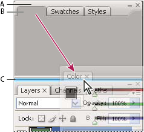
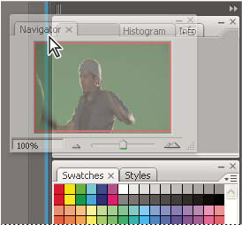
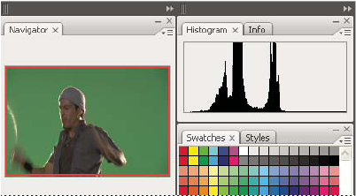
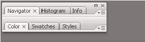
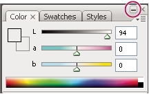
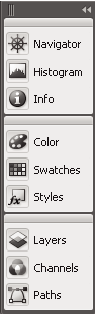
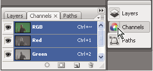

Customize the workspace
To create a custom workspace, move and manipulate panels (called palettes in Photoshop and in Adobe Creative Suite 2 components).

- A.
- Title bar
- B.
- Tab
- C.
- Drop zone
You can save custom workspaces and switch among them.
 In
Photoshop, you can change the font size of the text in the options
bar, palettes, and tool tips. Choose a size from the UI Font Size
menu in General preferences.
In
Photoshop, you can change the font size of the text in the options
bar, palettes, and tool tips. Choose a size from the UI Font Size
menu in General preferences. Dock and undock panels
Dock and undock panels
A dock is a collection of panels or panel groups displayed together, generally in a vertical orientation. You dock and undock panels by moving them into and out of a dock.
- To dock a panel, drag it by its tab into the dock, at the top, bottom, or in between other panels.
- To dock a panel group, drag it by its title bar (the solid empty bar above the tabs) into the dock.
- To remove a panel or panel group, drag it out of the dock by its tab or title bar. You can drag it into another dock or make it free-floating.


To prevent panels from filling all space in a dock,
drag the bottom edge of the dock up so it no longer meets the edge
of the workspace.Move panels
As you move panels, you see blue highlighted drop zones, areas where you can move the panel. For example, you can move a panel up or down in a dock by dragging it to the narrow blue drop zone above or below another panel. If you drag to an area that is not a drop zone, the panel floats freely in the workspace.
- To move a panel group or a stack of free-floating panels,
drag the title bar.
Press Ctrl (Windows) or Control (Mac OS)
while moving a panel to prevent it from docking.
Add and remove docks and panels
-
To remove a panel, click its close icon (the X at the upper-right corner of the tab), or deselect it from the Window menu.
-
To add a panel, select it from the Window menu and dock it wherever you wish.
Manipulate panel groups
Stack free-floating panels
When you drag a panel out of its dock but not into a drop zone, the panel floats freely, allowing you to position it anywhere in the workspace. Panels may also float in the workspace when first selected from the Window menu. You can stack free-floating panels or panel groups together so that they move as a unit when you drag the topmost title bar. (Panels that are part of a dock cannot be stacked or moved as a unit in this way.)

Resize or minimize panels
- To minimize a panel, panel group, or stack of panels,
click the Minimize button in its title bar.
You can open a panel menu even when the
panel is minimized.

Minimize button
Manipulate panels collapsed to icons
Collapse panels to icons to reduce clutter on the workspace. (In some cases, panels are collapsed to icons in the default workspace.) Click a panel icon to expand the panel. You can expand only one panel or panel group at a time.


- To collapse an expanded panel back to its icon, click
its tab, its icon, or the double arrow in the panel’s title bar.
If you select Auto-Collapse Icon Panels
from the Interface or User Interface Options preferences, an expanded
panel icon will collapse automatically when you click away from
it.